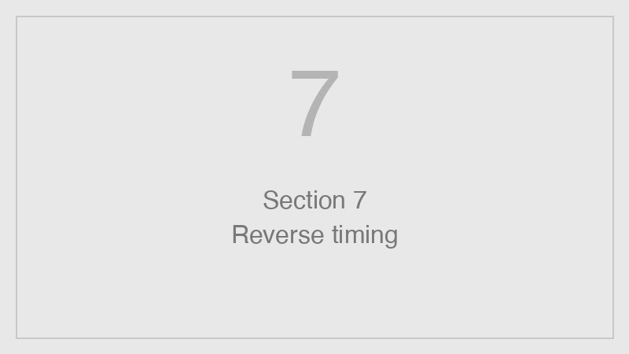

"What time should I leave?" — a calculation that does not add up in your head

In reverse-countdown mode you do not set a time for every item by hand. You only set the deadline at the top ("flight 3:30 PM") and the duration of each gap between steps — packing 1 h 30 min, taxi to airport 1 h, buffer/wait 2 h. Dotline subtracts them one by one and fills in the exact time for each item down the line, all the way to the bottom one: "start packing — 11:00 AM."
Why this breaks in the head. Calculating "what time to leave" is a multi-step operation: hold the deadline, subtract each interval, remember the running total, do not lose track. This is exactly the working-memory manipulation that is weakest in ADHD (see block 1), layered on top of unreliable time perception (block 4). So the needed start time either does not get calculated at all, or gets calculated wrong — and the person leaves late "even though I thought I had it figured out."
A second effect is the planning fallacy. People systematically underestimate how long a whole task will take (Buehler, Griffin & Ross 1994). The reason: when estimating a large task, we do not break it into parts. Once a task is "unpacked" into sub-steps and each is estimated separately, the total estimate becomes markedly more accurate — this is the direct experimental result of Kruger & Evans (2004). Guessing "packing — 1.5 h" and "taxi — 1 h" is more honest and easier than guessing one number for "when to leave for the flight."
Dotline: you enter only durations — the service turns them into a chain of exact start moments. One abstract "flight 3:30 PM" unfolds into concrete "leave at 12:30 PM" and "start packing at 11:00 AM." Then each such moment works as a trigger signal that launches the step on its own (block 5).
Kruger & Evans 2004 · Buehler, Griffin & Ross 1994